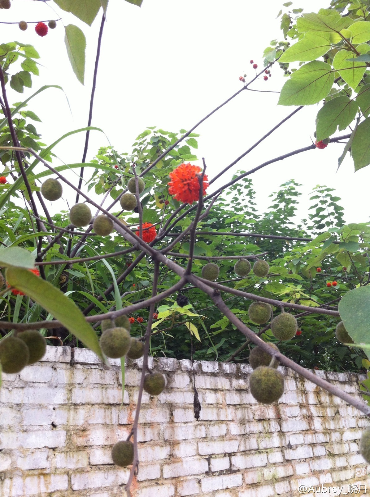
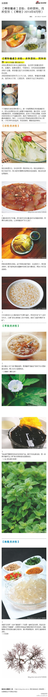

做完整的人未来的趋势。大组织是根据自己的需要塑造不完整的人，以适合特定岗位，许多特定岗位组合成一具庞大机器。//@Gator:这种氛围确实是大机构营造的，但是有能力独立于这种组织存活的人，进入这种机构反而存活艰难。@Ada李力:公司的好坏不在于规模大小，有很人性的大公司，也有很变态的小公司。不过，越大的组织，越容易营造一种氛围：个人脱离了这个组织是无法独立存活的。这种氛围想想都让人恐惧。
下次去公园摘些这种红色果实，但咋吃呢？//@博物杂志:构树。大部分人都见过吧，它的叶片形状变化很大，上面还有小细毛，能吸附污染粉尘，所以看上去总是脏脏的。红色的果可以吃，但往往刚一成熟就爬满了蚂蚁苍蝇，所以还是不吃的好@Aubrey_晓丹:@博物杂志 博物君，这个是什么呀？经常看到却总说不出名字。 
开始转食材。//@博物杂志:我来说重点：茎叶切碎后汆熟能拌凉菜，还能做成天妇罗、炖菜和酱汤。//@fengfeixue0219: 蜂斗菜的一个亚种，Petasites japonicus ssp. giganteus。亚种名giganteus就是“巨大”的意思。 //@江南蝶衣: 菊科蜂斗菜的一种---:该账号因被投诉违反《微博社区公约》的相关规定，现已无法查看。查看帮助 网页链接
凉粉@博物杂志:【博物餐桌】在这个热得受不了的夏至，献上凉粉一桌！这些看似差不多的弹软冻状物，有着不同的名堂，按照制作原料可以分为三类：淀粉类、草植类和海藻类。虽然来头不同、口感各异，但制作方法又殊途同归。 